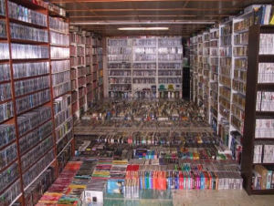
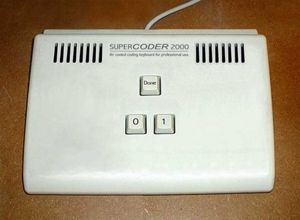
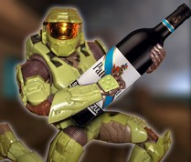

Superpro hardcore
 De: La Frikipedia, la enciclopedia extremadamente seria.
De: La Frikipedia, la enciclopedia extremadamente seria.
De la serie grandes personajes:
Hardcore en un día normal, común y corriente
| Nacimiento
|
El día en que se dieron cuenta de lo que eran
|
| Muerte
|
Indefinida(son inmortales)
|
| Ocupación
|
Jugar, jugar, jugar, ¿ya mencione jugar?
|
| Nacionalidad
|
Cualquiera
|
| Malo o bueno
|
Para cuando se cabrean, son muy malos
|
| Atentados contra la humanidad
|
Ninguno, solo jugar
|
| Religión
|
Algo
|
| Notas
|
Muy altas en la escuela, o no, dependiendo del nivel Hardcore que posean.
|
Los superpros hardcores son los mejores garrotas del mundo, que se caracterizan por dominar cada juego que exista o por existir sobre la faz de la Tierra, y sin importarles un comino el nivel de dificultad o la cantidad de jugadores ocasionales contra los que esten luchando, los muy cabrones, siempre ganan.
Un superpro hardcore es una especie de lloistics, teclado, maus, Wii-moto, entre otros) ya que con sólo mirar la pantalla ellos derrotan a todos los enemigos y ganan el juego. Los traductores de los antiguos jeroglíficos egipcios aseguran que los superpros hardcores ya existían en la prehistoria, se dice que son los ñandertal descubridores del fuego arcano, que les permitió cocinar carne de jabalí vil, y que fueron los vencedores de la Legión Ardiente, de la Plaga (festejaron bebiendo cerveza de las botas del Rey Exánime, véase World of Warcraft para más información) y de la Horda (se tiraron también a las elfas de sangre).
Se dice que son discípulos de Chuck Norris ya que baten records increíbles y hacen cosas imposibles, pero no superan al Tío de la Barba.
Niveles de superpros hardcores
Aprendices
Los aprendices son los superpros hardcores que apenas comienzan en este negocio, sus partidas tienen pequeños errores que a simple vista son invisibles, pero ellos los detectan al instante. Tienen una edad de entre 15 y 23 años. Al parecer, ellos tienen grandes capacidades en los juegos, y sin embargo, ellos aseguran que no es suficiente, entonces siguen practicando con los juegos hasta subir de nivel. Son capaces de pasarse varias rondas del Counter-Strike usando el cuchillo, y ganan medallas en torneos de juegos on-line. Un aprendiz usualmente es aquel que puede pasarse juegos completos en máxima dificultad lo más rápido posible sin guardar la partida, y sin usar trucos.
Expertos
Los expertos son los superpros hardcores que ya adquieren poderes mentales y pueden incluso lograr que los juegos les obedezcan o realizar hazañas increíbles que se consideran casi imposibles en los juegos, asombrando a la gente. Pueden pasarse Doom 2 en Nightmare en un sólo intento y sin cometer un sólo error. Pueden predecir las rutas de los vehículos ajenos en todos los Grand Theft Auto: Chinatown Wars en unos minutos salteándose todas las misiones para hacer la última misión). Tienen el 200% del progreso en los logros de juegos de rol y desbloquean todas las proezas de fuerza en el World of Warcraft. Morimoto, un experto superpro hardcore, se pasó Super Mario Bros 3 en 11 minutos y recolectó 99 vidas mientras esperaba en algunos de los últimos niveles y derrotó a Bowser en 1 nanosegundo (muchos aseguran haberlo visto mirando el televisor en lugar de pulsar los botones del lloistic al lanzar bolas de fuego, ya que la reacción de Mario en relación a los botones del lloistic es demasiado lenta).
Maestros
Los maestros son los superpros hardcores que han jugado tanto, que sus poderes sobrepasan el límite conocido por el hombre y se convierten en seres sobrehumanos con súperpoderes. Es tal la supremacía, que marcan 999 Combo Hits en el primer Street Fighter e incluso pueden pasarse todos los Metal Slug a la vez con una vida, saltando hacia atrás y sin arma alguna. Pueden pasarse el Arika Tetris (en dificultad Master)[1 con los ojos cerrados. No comen ni duermen debido a que se mantienen con vida gracias a que absorben las energías emitidas por la computadora, el arcade o su consola de videojuegos (hay hardcores que modifican su color de piel y se convierten en espejos que absorben la energía solar durante el verano). Hay quienes enseñan a los aprendices para que logren aprender las técnicas que todo superpro busca en su autodescubrimiento videojueguil. También hay quienes NO lo hacen para así vencer a los hardcores de inferior categoría una y otra vez, y así incrementar su ego. Los maestros suelen batallar en torneos internacionales, y el campeón mundial no sólo gana muchísimo dinero (se calcula que más de un billón de leros) sino también recibe el título merecido de ilustre superpro hardcore, una categoría notablemente superior a la de maestro. También existen otros medios para convertirse en ilustre, que consiste en realizar una de las siguientes hazañas:
- Ganar en una partida multijugador de FPS donde el hardcore lucha por sí sólo contra un ejército de juankers y cheaters.
- Ganar en el Age of Empires II contra muchos hardcores, o en su defecto, contra muchos cheaters y juankers, utilizando sólo un aldeano y sin edificios ni recursos de ningún tipo.
- Conseguir la victoria en todas las mazmorras y bandas de World of Warcraft (obviamente en un servidor oficial) en modo de 25 jugadores heróico, estando sólo, desnudo y sin arma alguna (se permite hacerlo en nivel máximo para conseguirlo).
- Traer en bandeja la cabeza del jefe máximo de un videojuego que aún no existe al líder de la empresa de desarrollo del juego.
- Saberse de memoria todas las canciones de coro de los videojuegos, cantarlas estando sólo, y en todos los idiomas que existan.
- Saberse de memoria todos los diálogos de los videojuegos, en arameo, en hebreo, en latín, y todas las otras lenguas muertas.
- Conseguir, en un MMORPG conocido (Diablo o Lineage) un objeto único que todavía no existe, y que sólo se puede equipar en un nivel inalcanzable.
- Alcanzar dicho nivel.
- Saberse de memoria todas las canciones de todos los Guitar Hero (incluyendo las que aún no existen) y ser capaz de infartar al público videojueguil por la impresión.
- Ganar en el Pro Evolution Soccer 2084 con un sólo jugador, en el peor equipo, teniendo una puntuación de 5000 - 0.
Ilustres
Los ilustres son los superpros hardcores que tras ganar campeonatos internacionales y/o realizar las grandiosas hazañas mencionadas anteriormente, han obtenido una habilidad increíble que les permite ganar a cualquier adversario en todas las situaciones, exceptuando a otros ilustres o hardcores de nivel superior. Los ilustres batallan entre sí para convertirse en seres aún más poderosos, ya que el crecimiento de las habilidades de los hardcores no tiene fin. Ya sea ganando, empatando o perdiendo, los ilustres logran aprender aún más cosas (aunque son tan hábiles y tan viciados que no parece posible que sigan superándose), que consisten en detalles nanoscópicos, que para ellos son fundamentales. Si un ilustre superpro no logra superar esos mínimos detalles y tiene un porcentaje de 0,000000000000001% de habilidad inferior a la de otro hardcore, es a menudo tomado de pringadillo por los demás de su nivel. Por lo tanto, el ilustre hardcore tiene que seguir intentando y luchando hasta superar al otro por 0,000000000000001% (o al menos igualar el porcentaje del otro), y así seguir sucesivamente hasta que en algún momento alcanza el siguiente nivel.
Virtuosos
Los virtuosos son los superpros hardcores que dejando de lado sus novias, su trabajo, incluso sus propias vidas sus inquietudes, batiendo récords sin rendirse y peleando hasta el final llegaron a superar sus límites nuevamente, superando las expectativas de los otros, como verdaderos titanes. Durante miles de años se creía que era imposible derrotar a los integrantes de esta categoría, debido a que en la Edad de Piedra sólo existía uno, que se llamaba R0x0r. Éste dominaba todos los juegos, incluyendo los de otros mundos, y ningún otro hardcore era capaz de derrotarlo.
Los ilustres superpros lo veneraban como dios de los videojuegos, hasta que en algún momento alguien lo superó. No se trata de Chuck Norris, puesto que Él es insuperable. Se trata del magnánimo y omnipotente MonEsVol, que logró batir su récord de 409450594059405902928375722958734956589293848492059601349 de puntos por frags en el Counter-Strike (realizados en 1 nanosegundo) por 1 punto de diferencia. Esto desconcertó a todos los ilustres, que descubrieron que se podía superar los límites de los hardcores virtuosos. Desde ese entonces existen muchos hardcores virtuosos, que pelean entre sí en el exterior de la galaxia, insistiendo en superarse a sí mismos y a los demás.
Dioses
Los Dioses superpros hardcores son los gloriosos jugadores que han superado increíblemente a todos los virtuosos y son capaces de lograr cosas que ningún hardcore de inferior nivel puede. Son los mejores jugadores en todo el Universo y compiten contra extraterrestres hardcores, dioses del Olimpo y otros seres superpoderosos. Aunque pasen 193.959.030.030.538.278.532.068.529.323 de años estos superpros no paran de jugar, ya que se han hecho inmortales por sus habidilades en juego. Sus hazañas son tales que se pasan el Final Fantasy VII matando a Sephiroth en el primer CD, llevando a Tifa Yuffie y Aeris desnudas. Resucitan a Aeris, llevan a Jenova en su grupo, Barret recupera su brazo, pelean contra las demás armas que no salieron, Cloud es feliz, pueden ir al Meteoro. Cuando un dios superpro hardcore se une a una partida del Counter-Strike, todos los jugadores que estén en su equipo ganan nada más comienza a jugar. Tienen más invocaciones (como el Nabish). Todo esto además de muchas otras cosas (ni siquiera usan Gameshark).
Propósito de ser un superpro hardcore
Existen en realidad muchos propósitos para convertirse en hardcore.
- Dominar el mundo: Como hay jugadores quienes odian este mundo o tienen ganas de conseguir poder, algunos éstos se convierten en hardcores para así poder mandar sobre todos los demás y así hacerse aún más poderosos. Sin embargo, siempre terminan abandonando estos proyectos (así es, siempre los abandonan) debido a que prefieren dedicar más tiempo a los videojuegos (mínimamente 23 horas 59 minutos todos los días) pero continúan aumentando su poder por las otras razones.
- Ser el mejor videojugador en todo el Universo: Los que siguen este fin suelen ser aquellos que se convierten en dioses. Existe el mejor jugador de videojuegos en todo el Universo, es el Tío de la Barba, pero como se considera insuperable el resto de los hardcores intenta superar el segundo mejor jugador del Universo, MonEsVol.
Tipos de hardcore segun sea su tribu urbana
- Normales:se dividen entre los que estan arriba
- Goticos:son los que visten de ropa negra,son unos enfermos viciados,y si el juego es un juego gotico,mejor
 Tierna habitación de un/a hardcore
 Clásico teclado
Hardcore para PS3, WII y Xbox 360
Equipamiento
- Cabeza: gorra echada pa' tras que dice "Fatal Fury"
- Cuello: amuleto con la foto del protagonista de su juego favorito o en su defecto el afotaco del presidente de una empresa de videojuegos.
- Torso: Armadura de placas de gladiador, chaleco antibalas o chaqueta rebosante de municiones y con granadas de verdad como adorno.
- Camisa/camiseta: Si es camiseta, de color negro, con el logo "Hardcore", normalmente en 1337 (puede ser h4rk0r o h4rdk0r3), el cual llevan de varios colores. En caso de que vista una camisa, será blanca, con muchas calcomanías y logotipos de juegos pegados en todas partes.
- Piernas: Los hombres suelen llevar pantalones largos, donde pegar calcomanías y otras cosas de juegos. Las mujeres también, aunque algunas llevan falda para mostrar sus tatuajes de juegos FPS, de rol, MMORPGPORPGOPRG, entre otros.
- Zapatos: Llevan las zapatillas de Megaman, para poder ir más rápido, o en su defecto botas mágicas sacadas de juegos como los de la saga The Legend of Zelda.
- Antebrazos: en el izquierdo llevan el brazal de Liu Kang, un reloj de titanio con la imagen del Rey Exánime, mientras que en el otro tienen algún brazalete superpoderoso de MMMMMORPORPOGPOGRPGPORPG.
- Cintura: Un cinturón con muchas bolsas dentro de las cuales se hallan memorycards, chips, monedas de oro de juegos de rol, llaveros, y una vaina donde guardan sus espadas/armas de fuego más peligrosas.
Como ven, los muy pijos visten como payasos, pero no hay que subestimarlos ya que saben Kung Fu y más...

L33t, el desayuno exclusivo para los 5up3rpr0 h4rk0r. ROXOR OMG!!!11!1! OATMEAL 1s t3h sux!!!11!

Yamcha fué hardcore en una etapa de su vida.
Como ser hardcore para dummies
- Paso 1:aburrete mucho en un dia soleado
- Paso 2:aqui viene lo complicado,ya que necesitas almenos un ejemplar de varias consolas desde el atari al Nintendo juiiiiiii que de seguro lo encuentras en teh internetz.Cumplido esto,debes empezar a vestirte de colores varios,a menos que quieras ser un hardcore gotico o tus amigos sean canis y quieras retirarte de ellos y convertirte en un hardcore como dios manda.
- Paso 3:entrenate versado en un videojuego,pasandotelo 45 veces en una semana,sacando a todos los personajes,o,en su defecto,pasartelo con una sola jodida vida
- Paso 4:graba un video de lo mejor que hayas hecho y subelo a youtube,luego PRESUMELO lo mas que puedas por el resto del año o lo que te quede de vida
- Paso 5:Ahora repite el paso 2 a 3 con cada juego que tengas,y no solo graba un video,con mas de 4 o 10 en un solo dia basta
- Paso 6:¡felicidades! eres un hardcore consagrado,ahora intenta por lo que te queda de vida no volverte N00b o habras cagado de forma horrible todo esto
Records y habilidades
- Marcar "sexualitys" en todos los Mortal Kombat
- Pasarse todos los títulos de Sonic jugando con Knuckles transformado en Supersaiyajin.
- Pasarse el House of the Dead jugando con Alice del Resident Evil
- Pasarse el ending secreto donde follan.
- Pasarse el Grand Theft Auto con un taxi del Crazy Taxi robado del Dreamcast.
- Pasarse el Mai Shiranui.
- Pasarse el Super Monkey Ball con Alex Kidd.
- Vencen a Perfect Chaos en Sonic Adventure y al Finalhazard en Sonic Adventure 2 usando a Bruce Lee transformado en Supersaiyan.
- Pueden pasarse el Duck Hunt usando al Master Chief.
- Pueden en Scarface tener un Minigun y vida infinita
- Cargarse a todos los heroes, en dificultad demente en Age of Empires 2 en 5 segundos
- Tener ya Halo 5
- Pasarse el primer Kingdom Hearts usando a Malefica
- Tener toda la saga Final Fantasy en varios idiomas, completa, y con dificultades nuevas
- poder salvar a aeris, matarla, quemarla y violarla, luego revivirla
- sacar el modo "extremyshardcoresupermegarecontragore" en Super Smash Bros Brawl
- Saberse de memoria TODAS las técnicas de todos los personajes de todos los juegos de peleas, Vin Diesel incluido
- Pasarse el juego de 24 en menos de 24 minutos
- conseguir pasarse todos los metal slug, en menos de 5 minutos, con 1 arma y solo con un credito... es mas, con una vida * sacar el modo nasal en pokemon
- conseguir quitarle el podio a super mario en diddys kong quest
- pasarse halo 1,2 y 3 en la dificultad "super saiyan"
- Tener una familia de 45 miembros en los SIMS 1 y 2 (cada miembro de la familia tiene los parámetro al máximo y no mueren)
- Han decifrado como se llaman los 130 miembros la organizacion XIII (¿¿no es que eran solo XIII miembros??)
- A ellos SI les gusta el juego de Atari: ET the extraterrestrial
- Saben cuando van a salir los juegos (año, mes, dia, hora, minuto, segundo, milisegundo, nanosegundo, etc.) 4 años antes de que anuncien al videojuego
- Se han a atrevido a pasarse el juego oficial de Vin Diesel, apenas van por el nivel 2
- No dicen la palabra "pendejo", dicen la palabra "N00b"
- Son muy frikis
- Son level 99999999999999999999999999999999999999999 en Tibia, Ragnarok Online, MU, Gaia, Adventure Quest, Dragonfable, Mech Quest, Runescape, Rakion, Gunbound y muchos más. Después borran al personaje para hacerlo con otro.
- Su roster en MUGEN es de infinitos personajes.
- Crean videojuegos en Paint, de buenas gráficas, que cualquier creador de videojuegos envidiaría, de paso le ponen voces y efectos en 3D.
- Les encanta jugar al Counter-Strike, a solas
- Son capaces de escuchar los pasos aunque esten desactivados en CS
- Se cagan de la rísa leyendo este artículo
- Se compran el Final Fantasy más nuevo en polaco, a la mañana siguiente tienen el juego completado, todos los personajes con nivel 99 y todas las sub-quests terminadas (luego dicen que fue un juego aburrido).
- Han logrado ver el final del famoso juego PONG de atari
- Tienen en su computadora bandas sonoras completas de series COMPLETAS de videojuegos en todos los formatos. De paso se descargan las versiones en piano y los tecnho remixes de cada canción
- かがきぎくぐけ ΑΒΓΔΕΖΗΘΙΚΛΜΝΞΟΠΡΣΤΥΦΧΨΩαβγδεζηθικλμνξοπρςστυφχψω
- Lo de arriba fué escríto por un Hardcore quejándose de este artículo
- Graban en YouTube cada hazaña en video que hacen
- Se pasaron bioshock, en el año 1990
- En Final Fantasy VIII tienen a todos los GF... en el CD 1
- Pueden nadar en GTA vice city
- Son capaces de asesinar a cualquiera que los supere
- La palabra "Gameshark" es sinónimo de "herejia" y "blasfemia"
- Se pasan el siguiente desafío de Final Fantasy X:NNNTNCNTUYJAJCJM. Sin la abreviación es: NoNuevojuego NoTelevisor NoControl NoTidus UsarsoloYuna JugarenlaAntartica JugarCiego JugarMudo
- Se pasan TODA la saga Resident Evil usando el cuchillo (no se recuperan con hierbas)
- Ya consiguieron la PS9
- Ganan más guitarras, 70 personajes nuevos, y poder insertar los MP3 que quieras en Guitar Hero (1, 2 o 3)
- Se pasan el juego GTA San Andreas hiendo hacia atrás
- Y aparte, atacan con la cabeza de CJ
- Halo es el juego MAS facil y retardado del mundo
- Pueden ver y controlar a Jesus en God of War
- Tienen el videojuego oficial de limpiar el baño
- No necesitan control, de hecho, no necesitan consola
- Pueden o no hablar en L33t (Yu sux!!!!!, Your a fuxin n00b.. I c4n pwn u up.. w00t? your br0dar w1ll beet me? your muud I can pwn h1m 2.. I c4n pwn u b0th at s4m tim)
- Juegan en el WII usando el control de la televisión
- Y a veces el teléfono
- También poseen el videojuego oficial de Lordi (LLamado "why don't you burn bitch!"(¿por qué no te quemas?, ¡perra!))
- Descubrieron la forma de desbloquear el Hot Coffee en Devil May Cry (no solo se follan a Trish, sino también a Lady y a Vergil)
- Juegan poker todos los domingos con Regy Films Aige (contratista de Nintendo)
- Les cabe Warcraft III en un diskette
- Mandan a callar a Dracula de Castlevania: Symphony of the Night
- No tienen respeto con la pobrecita de Mai Shiranui
- En Xenosaga (tanto 1, 2 o 3) pueden marcar infinitos combos con un solo boton
- Tinen su propio server en Counter-Strike
- Se pasan el Guitar Hero con los pies
- Minutos después de que salga un nuevo Zelda, ya han completado el juego con todas las búsquedas secundarias
- Son capaces de sostenerse flotando alrededor de un asteroide 45 segundos (o más, depende del Hardcore) en el Mario Galaxy
- Se pasan cada Metroid con un solo tanque de vida, después de haberse cargado así varias veces al jefe final, los buscan todos y en menos de 10 minutos ya tienen los 8/20 según el juego.
- Son esos PRO del Super Smash Bros Melee, que derrotan a CPUs Nivel 9 en 3 segundos.
- Una vez uno empató con Chuck Norris en varios juegos, luego se lo cargó (Chuck al Hardcore)
- Cada uno ha hecho una versión distinta de Super Mario 64 que probablemente podrás encontrar en YouTube.
- Marcan los tiempo mínimo de juego de cada juego (normalmente no superan las 2 horas, ni los 10 minutos si el juego es de EA)
- Sí, se pasaron a el juego oficial de Vin Diesel mientras leías esto
- En el MW2 consiguen una nuke antes de que nadie de su equipo mate a un contrario y antes de que impacte la nuke consiguen otra?
 Claro ejemplo de las armas que sacan los
Hardcores en Halo
¿Sabias que...
- Dios fue el primer Hardcore en el universo?
- ven los juegos de Atari en 3D?
- tienen fantasías sexuales con el Hardcore que los supere?
Ver también
|
|
 Shooter Shooter
 Terror Terror
 Velocidad Velocidad
 Rol Rol
 Estrategia Estrategia
 Aventuras Aventuras
 Fight! Fight!
 Clásicos Clásicos
 Deportivos Deportivos
 Aventura gráfica Aventura gráfica
 Novela visual Novela visual
 Personajes de videojuegos Personajes de videojuegos
|
Autor(es):
- Nexo
- Alex2610
- Roms
- Khazike Khashondo
- Z
- Lightblackheart
- Jesus™
- On64
- Nicolinho
- Alber93
Frikipedia 2005-2016, Licencia
GFDL 1.2 - Extraído por FrikiLeaks